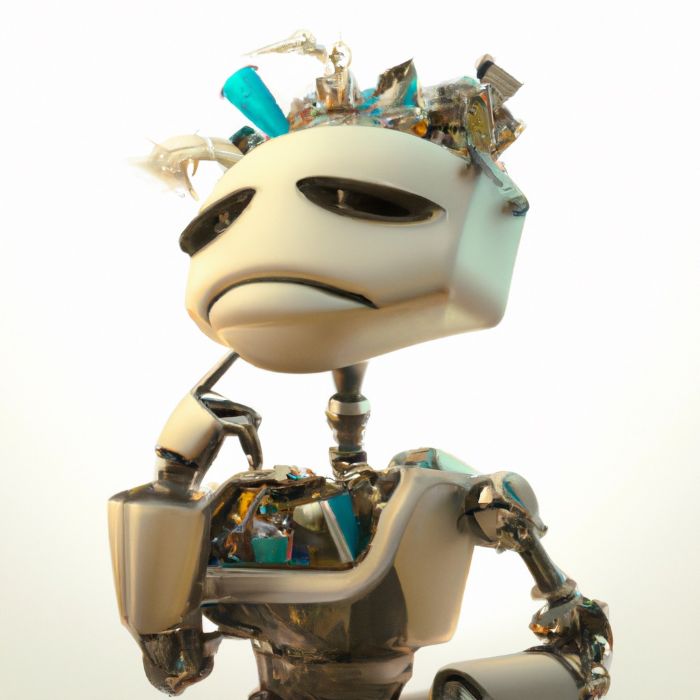

2.5. Decision Theory#
Decision theory is about turning information into action.
{kind=link}
Planning is simple for the trash sorter robot. At each time instant, the robot makes a decision about what action to take and then executes that action. There is no coupling between actions, and there is no dependence on the current action to establish conditions that will ensure success at future stages. Thus, planning reduces to simple decision making: at this moment, based on the best information available, what single action should the robot execute. This process is repeated each time a new item of trash arrives.
2.5.1. Naive decision making using priors#
A robot without sensors and make naive decisions using prior information.
Consider the case of a trash sorting robot that is not equipped with any sensing capabilities. How can this robot make a decision about how to act in the world? Without sensing, the best information that is available is the prior knowledge the robot has about the world. In our case, this knowledge is encoded as the prior probability \(P(C)\) over the categories of trash. Looking back at the table of priors in the previous sections, we see that paper occurs about 30% of the time and that cardboard occurs about 20% of the time, meaning that the paper bin is the appropriate destination about 50% of the time. We could adopt a simple decision rule for selecting actions: Choose the action that maximizes the prior probability of making the right choice. This would result in the robot always putting trash in the paper bin. If we do this, we expect that the robot will do the right thing around 50% of the time. This isn’t great, but it’s better than any other action, given the typical distribution of categories of trash. This approach, however, takes no account of the cost of wrong actions, which can result in significant problems.
2.5.2. Optimizing for the worst case#
A conservative approach to accounting for costs is to minimize the damage that can occur in the worst case scenario.
One way to account for the costs of actions would be to apply an action that minimizes the worst-case cost. This provides a quantitative upper bound on how badly things could go. Denote by \(\mathrm{cost}(a_i,c)\) the cost of applying action \(a_i\) when the piece of trash in the work cell is from category \(c\). We then write our decision rule as a minimization problem
From the table of costs given in previous sections, we see that this approach leads to always executing the nop action, since the worst-case cost for this action is 1, while the worst-case costs for the other three actions are 6, 2, and 10. This approach, however, merely reduces our trash sorting system to a conveyor belt that allows all items of trash to pass through, unsorted. In this case, the conservative action is to take no action, and the robot becomes a motionless spectator.
2.5.3. Minimizing expected cost#
If the system will operate over a long period of time, we can optimize the long-term average cost.
When uncertainty exists for each action, what is the right way to minimize costs? The ideal decision would always minimize the cost of executing each action, but because our knowledge of the world is uncertain (captured in the prior probability distribution), it is impossible to know which action this would be. In such cases, the concept of \(expectation\) from probability theory (introduced above) provides a principled way to reason about decisions.
The idea of expected cost is this: what do we expect to be the average cost of performing an action many times. The expected value for the cost of applying action \(a\) is merely the weighted average of the costs \(cost(a,c)\), where the weights are exactly the prior probabilities assigned to the categories, \(c\):
In the equation above for expectation, the notation \(E [ cost(a, C) ]\) denotes the expected cost for executing the action \(a\) with the expectation being taken with respect to the randomly occurring trash category \(C\). We use upper case \(C\) to indicate that the category is a random quantity, and that the expectation should be computed with respect to the probability distribution on categories (i.e., the priors given in the previous section).
We can now formulate our decision process as the following minimization problem
2.5.3.1. Implementation in Python#
# as before, in S12:
categories = ["cardboard", "paper", "can", "scrap metal", "bottle"]
actions = ["glass bin", "metal bin", "paper bin", "nop"]
cost = np.array([[2, 2, 4, 6, 0],
[1, 1, 0, 0, 2],
[0, 0, 5, 10, 3],
[1, 1, 1, 1, 1]])
pd.DataFrame(cost, index=actions, columns=categories)
| cardboard | paper | can | scrap metal | bottle | |
|---|---|---|---|---|---|
| glass bin | 2 | 2 | 4 | 6 | 0 |
| metal bin | 1 | 1 | 0 | 0 | 2 |
| paper bin | 0 | 0 | 5 | 10 | 3 |
| nop | 1 | 1 | 1 | 1 | 1 |
variables = Variables()
Category = variables.discrete("Category", categories)
category_prior = gtsam.DiscreteDistribution(Category, "200/300/250/200/50")
category_prior
P(0):
| 0 | value |
|---|---|
| 0 | 0.2 |
| 1 | 0.3 |
| 2 | 0.25 |
| 3 | 0.2 |
| 4 | 0.05 |
cost @ category_prior.pmf()
array([3.2, 0.6, 3.4, 1. ])
Using the table above, it is clear that the optimal action given only the prior distribution on categories is to always place the trash item in the metal bin. If we wish to improve upon this, it will be necessary for the robot to somehow improve its knowledge of the world state. This can be done by using sensors to measure various properties of the world, and then drawing inferences about the world state using these measurements. We now turn our attention to this problem.
2.5.4. Incorporating sensor information#
We can exploit sensor information to make better decisions.
Above, we learned how to compute the posterior \(P(C|S)\) using MAP estimation. We can use this conditional distribution to compute the expectation of the cost of an action given that the sensor returned a specific measurement. This can be done by modifying the usual equation for expectation so that the conditional distribution $\(P(C|S)\) is used instead of the prior \(P(C)\):
Our decision process can then be formulated as a minimization of this conditional expected cost:
Note that this approach can also be applied when we have multiple sensors by conditioning on the collection of sensor readings, say \(s_1, \dots, s_n\):
In python, we just calculate the expected cost, now using the posterior instead of the prior, and take argmin using np.argmin:
posterior = np.array([0.2, 0.3, 0.1, 0.1, 0.3])
expected_cost = cost @ posterior
optimal_action = np.argmin(expected_cost)
print(f"expected_cost={expected_cost}, optimal action={optimal_action}")
expected_cost=[2. 1.1 2.4 1. ], optimal action=3